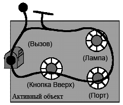

| Концепция: Параллелизм |
 |
|
| Связанные элементы |
|---|
Что такое параллелизм?Параллелизм - это стремление к тому, чтобы процессы протекали в системе одновременно. Конечно, параллелизм - это естественный феномен. В реальном мире в каждый момент времени одновременно происходит множество событий. При разработке программного обеспечения, которое отслеживает и управляет работой реальных систем, мы должны иметь дело с естественным параллелизмом. При работе с параллелизмом в системах программного обеспечения, важно принимать во внимание два главных аспекта: способность обнаружить и отреагировать на внешние события, происходящие в случайном порядке, и обеспечение минимального требуемого интервала отклика на события. Если каждое из параллельных действий происходит независимо от других, действительно параллельно, то этот случай относительно прост: для этого достаточно создать отдельные программы, выполняющие каждое действие. Трудности проектирования параллельных систем связаны главным образом с необходимостью взаимодействия параллельных процессов. При взаимодействии параллельных процессов требуется определенная координация.
Рисунок 1: Пример параллелизма: параллельные процессы, которые не взаимодействуют, имеют простые параллельные выходы. Когда параллельные процессы взаимодействуют или используют общие ресурсы, параллельные выходы становятся важными. В качестве аналогии можно рассмотреть транспортный поток. Параллельные потоки движения на разных дорогах с небольшим взаимодействием создают мало проблем. Параллельные потоки на смежных полосах движения требуют некоторой координации для обеспечения безопасности взаимодействия, но самое сложное взаимодействие происходит на перекрестках, где необходима тщательная координация. Чем нам интересен Параллелизм?Некоторые из причин применения параллелизма являются внешними. То есть, они продиктованы требованиями среды. В реальных системах многие вещи происходят одновременно, и это должно быть отражено в программном обеспечении в "реальном времени". Для этого многие системы программного обеспечения, работающие в реальном времени, должны быть "реактивными". Они должны реагировать на внешние события, которые могут происходить в случайные моменты времени, в случайном порядке. Проектирование стандартной процедурной программы для обработки этих ситуаций является крайне сложным. Намного проще может оказаться разделить систему на отдельные элементы программного обеспечения для параллельной обработки каждого из этих событий. Ключевым словом при этом является слово "может", потому что сложность также обусловлена степенью взаимодействия между событиями. Для параллелизма могут также существовать внутренние причины [LEA97]. Параллельное выполнение задач может в значительной степени увеличить скорость работы системы при наличии нескольких CPU. Даже при наличии одного процессора многозадачность может существенно ускорить работу, предотвратив блокировку одного действия другим, например, при операциях ввода/вывода. Обычной ситуацией, в которой это происходит, является запуск системы. Часто бывает много компонентов, каждый из которых требует времени для готовности выполнить операцию. Последовательное выполнение этих операций может быть очень медленным. Управляемость системы также может быть увеличена посредством параллелизма. Например, одна функция может запустить, остановить или повлиять на работу другой функции, что очень сложно обеспечить без наличия параллельных компонентов. Что делает параллельное программное обеспечение сложным?Почему при всех этих преимуществах мы не используем параллельное программирование везде? Большинство компьютеров и языков программирования в своей основе являются последовательными. Процедура или процессор выполняют одну инструкцию в один момент времени. При использовании одного последовательного процессора иллюзия параллелизма создается чередованием выполнения различных задач. Трудность состоит не в механике этого, а в определении того, когда и как программные сегменты должны сменять друг друга, чтобы они могли взаимодействовать между собой. Хотя параллелизм легко достигается при наличии нескольких процессоров, взаимодействие становится более сложным. Прежде всего есть вопрос о коммуникации между задачами, выполняющимися на разных процессорах. Обычно в это вовлечено несколько уровней программного обеспечения, что увеличивает сложность и количество служебных данных, обеспечивающих синхронизацию. В многопроцессорных системах детерминизм уменьшается, поскольку часы и расчет синхронизации могут различаться, а выполнение компонентов может независимо друг от друга неудачно заканчиваться. Наконец, параллельные системы более сложны для понимания, потому что в них отсутствует явное общее состояние системы. Состояние параллельной системы - это совокупность состояний ее компонентов. Пример параллельной системы реального времени: система лифтаВ качестве примера обсуждаемой здесь концепции рассмотрим систему лифта. Точнее говоря, мы рассмотрим компьютерную систему, предназначенную для управления группой лифтов в одном помещении здания. Очевидно, что в группе лифтов может быть много параллельных вещей, или не быть их совсем! В любой момент времени кто-то на любом этаже может вызвать лифт, и другие запросы могут находиться в невыполненном состоянии. Некоторые из лифтов могут простаивать, в то время как другие перевозят пассажиров или перемещаются в ответ на вызов. Двери должны быть открыты или закрыты в соответствующие моменты времени. Пассажиры могут заблокировать двери, нажав кнопки закрытия или открытия дверей, или выбрав этаж, а затем изменив свой выбор. Табло необходимо обновлять, двигателями нужно управлять, и так далее. Все это должно происходить под контролем системы управления лифтами. В общем, это хорошая модель для изучения концепции параллелизма, которую мы хорошо понимаем и владеем набором рабочих понятий о ней.
Потенциальные пассажиры помещают запросы в систему в различное время, система пытается найти оптимальный способ их выполнения, выбирая лифты на основании их текущего состояния и намеченного времени ответа. Например, когда первый потенциальный пассажир, Энди, вызывает лифт для движения вниз, а оба лифта простаивают, ближайший лифт, Лифт 2, отвечает на вызов, хотя он должен сначала подняться вверх, чтобы забрать Энди. С другой стороны, через несколько секунд, когда второй потенциальный пассажир, Боб, вызывает лифт для движения вверх, более отдаленный Лифт 1 отвечает на этот вызов, потому что известно, что Лифт 2 должен отправиться вниз на пока еще не определенную дистанцию, прежде чем он сможет ответить на вызов вверх. Параллелизм как стратегия упрощенияЕсли система лифтов состоит только из одного лифта, и лифт может обслуживать в один момент времени только одного пассажира, мы можем склониться к идее, что управлять системой должна обычная последовательная программа. Но даже в этом "простом" случае программа требует многих ветвей для обработки различных условий. Например, если пассажир не вошел в лифт и не выбрал этаж, нужно сбросить состояние лифта, чтобы он мог ответить на другой вызов. Обычное требование обработки вызовов от нескольких потенциальных пассажиров иллюстрирует внешние причины параллелизма, которые мы обсуждали ранее. Поскольку потенциальные пассажиры проживают свои собственные параллельные жизни, они совершают вызовы лифта на вид случайным образом, не зависимо от состояния лифта. Чрезвычайно трудно спроектировать последовательную программу, которая сможет ответить на любое из этих внешних событий в любое время, продолжая управлять лифтом в соответствии с прежними решениями. Абстрагирование параллелизмаДля того чтобы эффективно проектировать параллельные системы, мы должны понимать роль параллелизма в системе, и для этого нам необходима абстракция самого параллелизма. Основными строительными блоками параллельной системы являются "действия", выполняемых более или менее независимо друг от друга. Полезной графической абстракцией таких действий являются "временные нити" Бура. [BUH96] Наш сценарий лифта на рисунке 3 фактически использует их форму. Каждое действие представлено линией, вдоль которой оно движется. Большие точки указывают места начала действия или ожидания события перед продолжением. Одно действие может инициировать продолжение другого, что представлено в нотации временных нитей соприкосновением места ожидания и другой временной нити.
Рисунок 3: Визуализация нитей выполнения Основными строительными блоками программного обеспечения являются процедуры и структуры данных, но сами по себе они недостаточны для рассуждений о параллелизме. Процессор выполняет процедуру, следуя определенному пути в зависимости от текущих условий. Этот путь можно назвать "нитью выполнения" или "нитью управления". Эта нить управления может разветвляться или зацикливаться в зависимости от условий, которые возникают в разное время, и в системах реального времени она может приостановиться на некоторый период времени или ожидать запланированного момента времени для возобновления. С точки зрения проектировщика программы, нить выполнения управляется логикой программы и планируется операционной системой. Если проектировщик программного обеспечения предусматривает вызов одной процедурой других, нить выполнения перепрыгивает из одной процедуры в другую, а затем обратно для продолжения, когда встречается оператор возврата. С точки зрения CPU, есть только одна главная нить выполнения, вплетенная в программное обеспечение, дополненная короткими отдельными нитями, которые выполняются в ответ на аппаратные прерывания. Поскольку все остальное строится на этой модели, проектировщикам важно это знать. Разработчики систем реального времени в большей степени, чем разработчики других типов программного обеспечения, должны понимать как работает система во всех подробностях. Однако, эта модель имеет такой низкий уровень абстракции, что она может только представлять параллелизм очень грубо, с точки зрения CPU. Для проектирования сложных систем полезно иметь возможность работать на разных уровнях абстракции. Конечно, абстракция создается из представления или модели, которая опускает лишние подробности, чтобы сфокусироваться на том, что является важным в данной проблеме. На следующем уровне абстракции мы обычно представляем себе программное обеспечение в терминах уровней. На самом фундаментальном уровне операционная система расположена между аппаратным обеспечением и программным обеспечением приложения. Она предоставляет приложению аппаратные службы, такие как память, синхронизацию и систему ввода/вывода, но она абстрагирует CPU для создания виртуальной машины, независимой от фактической конфигурации аппаратного обеспечения. Реализация параллелизма: механизмыУправление нитямиДля поддержки параллелизма система должна обеспечить выполнение нескольких нитей управления. Абстракция нити управления может быть реализована различными способами с помощью аппаратного и программного обеспечения. Наиболее распространенными механизмами являются разновидности следующих [DEI84], [TAN86]:
МногозадачностьКогда операционная система предоставляет многозадачность, обычным модулем параллелизма является процесс. Процесс обеспечивается, поддерживается и управляется операционной системой, единственным назначением которой является предоставление среды для выполнения программы. Процесс обеспечивает пространство памяти для исключительного использования его программой приложения, нить выполнения и, возможно, некоторые средства для отправки сообщений и получения их от других процессов. На самом деле, процесс - это виртуальный CPU для выполнения параллельной части приложения. Каждый процесс имеет одно из трех возможных состояний:
Процессам также часто присваиваются относительные приоритеты. Ядро операционной системы определяет, какой процесс должен выполняться в данное время на основании их состояний, приоритетов и некоторой стратегии расписания. Многозадачные операционные системы в действительности используют одну общую нить управления для всех их процессов. Примечание: Термины 'задача' и 'процесс' часто используются взаимозаменяемо. К сожалению, термин 'многозадачность' в общем используется для обозначения способности управления несколькими процессами одновременно, в то время как 'многопроцессорная обработка' обозначает систему с несколькими процессорами (CPU). Мы придерживаемся такой договоренности, потому что она наиболее общепринята. Однако, мы мало используем понятие 'задача', и делаем это для четкого разграничения между модулем выполняющейся работы (задача) и сущностью, которая предоставляет ресурсы и среду для этого (процесс). Как мы говорили ранее, с точки зрения CPU, есть только одна главная нить выполнения. Точно так же, как прикладная программа может перепрыгивать из одной процедуры в другую при вызовах, так и операционная система может передавать управление от одного процесса другому при появлении прерывания, при завершении процедуры или при некоторых других событиях. Поскольку процесс осуществляет защиту памяти, такое "переключение между задачами" может вызвать значительную дополнительную нагрузку. Кроме того, поскольку стратегия расписания и состояния процессов мало контролируются со стороны приложения, чередование процессов имеет слишком низкий уровень абстракции для того, чтобы считать его разновидностью параллелизма, принимаемой в расчет в приложении. Для того чтобы явно говорить о параллелизме, важно установить четкое различие между понятием нити выполнения и таким переключением задач. Каждый процесс можно представлять себе как поддерживающий свою собственную нить выполнения. Когда операционная система переключается между процессами, одна нить выполнения временно прерывается, а другая начинается или возобновляется с прежнего места. МногопотоковостьМногие операционные системы, в особенности те, которые используются в приложениях реального времени, предлагают "упрощенную" альтернативу процессам - "нити" или "упрощенные нити". Нити - это способ достижения немного более высокого уровня дискретности параллелизма в процессе. Каждая нить принадлежит отдельному процессу, и все нити в процессе имеют общее пространство памяти и другие ресурсы, управляемые процессом. Обычно каждая нить назначается процедуре для выполнения. Примечание: К сожалению, термин 'нить' перегружен значениями. Когда мы используем само слово 'нить', как мы делаем это здесь, мы имеем в виду 'физическую нить', предоставляемую и управляемую операционной системой. Когда мы говорим о 'нити управления', 'нити выполнения' или 'временной нити', как в предшествующем обсуждении, мы имеем в виду абстракцию, которая не обязательно связана с физической нитью. Многопроцессорная обработкаКонечно, наличие нескольких процессоров предоставляет возможность истинно параллельного выполнения. Чаще всего, каждая задача постоянно связана с процессом, выполняющимся в определенном процессоре, но в некоторых ситуациях задачи могут динамически назначаться другому доступному процессору. Возможно, наиболее доступный способ сделать это состоит в использовании "симметричной многопроцессорной обработки". В такой аппаратной конфигурации несколько CPU могут получать доступ к памяти через общую шину. Операционные системы, поддерживающие симметричную многопроцессорную обработку, могут динамически назначать нити любым доступным CPU. Примерами операционных систем, поддерживающих симметричную многопроцессорную обработку, являются SUN Solaris и Microsoft Windows NT. Основные проблемы параллельного программного обеспеченияРанее мы выдвинули на вид парадоксальное утверждение о том, что параллелизм одновременно усложняет и упрощает программное обеспечение. Параллельное программное обеспечение предоставляет более простое решение сложных проблем главным образом потому, что оно позволяет производить "разделение ответственности" среди параллельных действий. В этом отношении, параллелизм - это только лишь еще одно средство увеличения модульности программного обеспечения. Когда система должна выполнять преимущественно независимые действия или реагировать на преимущественно независимые события, назначение их отдельным параллельным компонентам естественно упрощает проект. Дополнительные сложности, связанные с параллельным программным обеспечением, возникают практически всегда в ситуациях, в которых эти параллельные действия почти, но не полностью независимы. Другими словами, сложности возникают из-за их взаимодействий. С практической точки зрения, взаимодействия между асинхронными действиями неизбежно вызывают обмен некоторого вида сигналами или информацией. Взаимодействия между параллельными нитями управления повышает количество проблем, свойственных параллельным системам, которые должны быть разрешены для обеспечения правильного поведения системы. Сравнение асинхронного и синхронного взаимодействияХотя есть много различных специфических реализаций коммуникации между процессами (IPC) или механизмов коммуникации между нитями, все они в конечном счете могут быть разделены на две категории: При асинхронной коммуникации отправляющее действие посылает свою информацию независимо от того, готов ли получатель ее принять, или нет. После отправки информации таким образом, отправитель продолжает выполнять свою работу. Если получатель не готов получить информацию, то она помещается в некоторую очередь, из которой получатель сможет извлечь ее позже. И отправитель, и получатель, работают асинхронно по отношению друг к другу, и, следовательно, они не могут делать предположений о состоянии друг друга. Асинхронная коммуникация часто называется передачей сообщений. Синхронная коммуникация включает в себя синхронизацию между отправителем и получателем, кроме обмена информацией. В процессе обмена информацией выполнение двух параллельных действий фактически сливается вместе, разделяя общий сегмент кода, а затем разделяется снова, после завершения коммуникации. Таким образом, в течении некоторого времени они синхронизируются друг с другом и защищаются от конфликтов между собой. Если одно действие (отправитель или получатель) готово к коммуникации раньше другого, оно будет приостановлено до тех пор, пока другое также не станет готово. По этой причине, этот режим коммуникации иногда называют рандеву. Потенциальная проблема синхронной коммуникации состоит в том, что во время ожидания готовности своей пары действие не способно реагировать на другие события. Для многих систем реального времени это не всегда допустимо, потому что при этом невозможно обеспечить своевременную реакцию на важную ситуацию. Другой недостаток состоит в подверженности взаимоблокировке. Взаимоблокировка происходит, когда два или более действий вовлечены в дурной цикл ожидания друг друга. Когда необходимо обеспечить взаимодействие между параллельными действиями, проектировщик должен выбрать между асинхронным и синхронным типом. Под синхронным мы понимаем такое взаимодействие, при котором две или более параллельных нитей управления должны произвести "рандеву" в один момент времени. В общем смысле, это означает, что одна нить управления должна ожидать ответ другой на запрос. Самой простой и распространенной формой синхронного взаимодействия является случай, когда действие А требует информацию от параллельного действия В для продолжения своего собственного выполнения. Конечно, синхронные взаимодействия обычны для непараллельных компонентов программного обеспечения. Обычные вызовы процедур представляют из себя главный пример синхронного взаимодействия: когда одна процедура вызывает другую, инициатор немедленно передает управление вызываемой процедуре и "ожидает", когда оно будет передано ему назад. Однако, в мире параллелизма необходим дополнительный инструментарий для синхронизации независимых нитей управления. Асинхронные взаимодействия не требуют рандеву во времени, но для обеспечения коммуникации двух нитей управления все равно необходим дополнительный инструментарий. Часто этот инструментарий имеет вид каналов коммуникации с очередью сообщений, благодаря которому сообщения могут отправляться и приниматься асинхронно. Заметьте, что в одном приложении может быть совмещена синхронная и асинхронная коммуникация, в зависимости от того, нужно ли ожидать ответа или можно продолжать работу во время обработки сообщения получателем. Помните, что истинный параллелизм процессов или нитей возможен только при многопроцессорной обработке. При наличии только одного процессора иллюзия параллельного выполнения процессов или нитей создается с помощью планировщика операционной системы, который разделяет доступные ресурсы обработки на маленькие порции, благодаря чему все выглядит так, как будто параллельно выполняется несколько нитей или процессов. Неудачный проект аннулирует это разделение времени, создавая несколько процессов или нитей, которые часто синхронно взаимодействуют. Это приводит к тому, что процессы или нити тратят большую часть своей "порции времени" на ожидание ответа другого процесса или нити. Конфликт общих ресурсовПараллельные действия могут зависеть от недостаточных общих ресурсов. Типичным примером являются устройства ввода/вывода. Если действие требует ресурса, который используется другим действием, он должен подождать его освобождения. Условия состязания: проблема согласованного состоянияВозможно, наиболее фундаментальной проблемой проектирования параллельных систем является избежание "условий состязания". Когда часть системы должна выполнять зависимые от состояния функции (то есть, такие функции, результат которых зависит от текущего состояния системы), необходимо гарантировать, чтобы состояние не менялось на протяжении операции. Другими словами, некоторые операции должны быть "атомарными". Всякий раз когда одна или несколько нитей имеют доступ к одной и той же информации о состоянии, необходима некоторая форма "управления параллелизмом" для обеспечения того, чтобы одна нить не изменила состояние при выполнении другой нитью атомарной зависимой от состояния операции. Одновременные попытки получить доступ к одной и той же информации о состоянии, что может привести состояние ко внутренней несовместимости, называется "условиями состязания". Типичным примером условия состязания является ситуация, которая может произойти в системе лифтов, когда пассажир выбирает этаж. Наш лифт работает со списком этажей, на которых нужно остановится при движении в каждом направлении. Каждый раз когда лифт прибывает на этаж, одна нить управления удаляет этот этаж из соответствующего списка и получает из него следующее место назначения. Когда список пуст, то лифт или изменяет направление при наличии этажей в другом списке, или простаивает, если другой список тоже пуст. Другая нить управления ответственна за размещение запросов на этажи в соответствующем списке при выборе их пассажирами. Каждая нить выполняет комбинацию операций в списке, которые по сути не являются атомарными. Например, проверка следующего доступного слота и его заполнение. Если операции нитей будут чередоваться, то они могут перезаписать один и тот же слот в списке. ВзаимоблокировкаВзаимоблокировка - это ситуация, в которой две нити управления блокируют друг друга, ожидая пока другая выполнит некоторое действие. По иронии судьбы, взаимоблокировка часто возникает именно потому, что мы применяем механизм синхронизации для избежания условий состязания. Пример условий состязания с лифтом может проиллюстрировать относительно легкий случай взаимоблокировки. Нить управления лифта считает, что список пуст, и поэтому никогда не едет на другие этажи. Нить запроса этажа считает, что лифт очищает список, и поэтому не уведомляет лифт о необходимости покинуть простаивающее состояние. Другие практические проблемыКроме "фундаментальных" проблем, существует несколько практических проблем, которые должны быть явно разрешены в проекте параллельного программного обеспечения. Компромиссы быстродействияПри наличии единственного CPU механизмы, имитирующие параллелизм с помощью переключения задач, используют циклы CPU, которые в противном случае могли бы быть использованы самим приложением. С другой стороны, если программному обеспечению приходится, например, ожидать устройства ввода/вывода, то выигрыш в быстродействии, достигнутый с помощью параллелизма, может быть нивелирован любой дополнительной нагрузкой. Компромиссы сложностиПараллельное программное обеспечение требует координации и механизмов управления, которые не нужны в последовательных программах. Это делает параллельное программное обеспечение более сложным и увеличивает возможность ошибок. Проблемы параллельных систем также являются более трудными для диагностики из-за наличия множественных нитей управления. С другой стороны, как мы указывали ранее, когда параллелизм продиктован внешними причинами, параллельное программное обеспечение, которое независимо управляет разными событиями, может быть значительно проще последовательных программ, которые должны обрабатывать события в произвольном порядке. НеопределенностьПоскольку чередование выполнения параллельных компонентов определяется многими факторами, одно и то же программное обеспечение может отвечать на одну и ту же последовательность событий в разном порядке. В зависимости от проекта такие изменения порядка могут приводить к разным результатам. Роль программного обеспечения приложения в управлении параллелизмомПрограммное обеспечение приложения может быть вовлечено или, наоборот, не вовлечено в реализацию управления параллелизмом. Существует целый спектр возможностей, в том числе, в порядке увеличения степени вовлеченности:
Эти возможности не охватывают весь спектр и не исключают друг друга. В одной системе может применяться их комбинация. Абстрагирование параллелизмаОбычной ошибкой в проектах параллельных систем является слишком ранний выбор специальных механизмов параллелизма в процессе проектирования. Каждый механизм имеет свои преимущества и недостатки, и выбор "лучшего" механизма в определенной ситуации часто определяется незначительными компромиссами. Чем раньше выбирается механизм, тем меньше информации имеется для его выбора. Закрепление механизма также уменьшает гибкость и адаптируемость проекта к разным ситуациям. Для наиболее сложных задач проектирования параллелизм лучше всего рассматривать на нескольких уровнях абстракции. Во-первых, функциональные требования системы следует понимать в терминах ее желаемого поведения. Далее, нужно исследовать возможные роли параллелизма. Это лучше всего сделать с помощью абстракции нитей без фиксации определенной реализации. Для расширения возможностей, окончательный выбор механизма реализации параллелизма должен оставаться открытым, чтобы позволить производить тонкую настройку быстродействия и гибкости распределенных компонентов различным образом для разных конфигураций продукта. "Концептуальный зазор" между предметной областью (например, системой лифта) и областью решения (программным обеспечением) остается одной из самых больших трудностей при проектировании систем. "Наглядные формализмы" чрезвычайно полезны для понимания сложных идей, таких как параллельное поведение, и они, по сути, устраняют этот разрыв. Среди средств, признанных полезными при решении таких проблем, находятся:
Объекты как параллельные компонентыДля разработки систем параллельного программного обеспечения необходимо комбинировать составные блоки программного обеспечения (процедуры и структуры данных) с составными блоками параллелизма (нитями управления). Ранее мы обсуждали концепцию параллельных действий, но система состоит не из действий. Система состоит из компонентов, и имеет смысл составлять системы из параллельных компонентов. Взятые сами по себе, ни процедуры, ни структуры данных, ни нити управления, не являются естественными моделями для параллельных компонентов, но объекты могут очень хорошо скомбинировать все эти необходимые элементы в один подходящий пакет. Объект объединяет процедуры и структуры данных в один связный компонент со своим собственным поведением и состоянием. Он инкапсулирует специфическую реализацию сотояния и поведения, а также определяет интерфейс, с помощью которого другие объекты и программное обеспечение могут с ним взаимодействовать. В общем случае, объекты моделируют концепции или сущности реального мира и взаимодействуют с другими объектами посредством обмена сообщениями. Сегодня они признаны многими как лучший способ конструирования сложных систем.
Рисунок 4: Простой набор объектов системы лифта.
В такой модели объектов параллелизм может иметь две формы. Меж-объектный параллелизм возникает, когда два или несколько объектов выполняют действия независимо друг от друга с помощью отдельных нитей управления. Внутри-объектный параллелизм возникает, когда несколько нитей управления активны в одном объекте. Сегодня в большинстве объектно-ориентированных языков программирования объекты "пассивны" и не имеют своих собственных нитей нитей управления. Нить(и) управления должна(ы) быть предоставлена(ы) внешней средой. Чаще всего, средой является стандартный процесс операционной системы, созданный для выполнения объектно-ориентированной "программы", написанной на языке, подобном C++ или Smalltalk. Если операционная система поддерживает многопотоковость, то в одном или разных объектах могут быть активны множественные нити. На рисунке ниже, пассивные объекты представлены круглыми элементами. Затененная внутренняя область каждого объекта - это информация о его состоянии, а сегментированный внешний круг - это набор процедур (методов), которые определяют поведение объекта.
Внутри-объектный параллелизм влечет за собой все проблемы параллельного программного обеспечения, такие как потенциальная возможность условий состязания, когда несколько нитей управления получают доступ к одному участку памяти, - в данном случае, к инкапсулированным в объект данным. Можно подумать, что инкапсуляция данных решает эту проблему. Но проблема, конечно, состоит в том, что объект не инкапсулирует нить управления. Хотя внутри-объектный параллелизм в основном избегает этих проблем, существует еще одна трудность. Для обеспечения взаимодействия двух параллельных объектов с помощью обмена сообщениями по крайней мере две нити управления должны контролировать сообщение и доступ к одному и тому же участку памяти. Связанная (но более трудная) проблема состоит в распределении объектов среди различных процессов или процессоров. Обмен сообщениями между объектами различных процессов требует поддержки взаимодействия между процессами и, в общем случает, требует кодирования сообщений в форму данных, которая может быть передана за пределы процесса. Конечно, ни одна из этих проблем не является неразрешимой. Фактически, как мы указывали в предыдущем разделе, все параллельные системы сталкиваются с такими проблемами, поэтому существуют проверенные решения. "Управление параллелизмом" только увеличивает объем работы и создает дополнительные возможности для ошибок. Кроме того, оно скрывает сущность проблемы приложения. По всем этим причинам, мы хотим минимизировать потребность программистов иметь с этим дело явно. Одним из способов достижения этого является построение объектно-ориентированной среды с поддержкой передачи сообщений между параллельными объектами (включая управление параллелизмом) и минимизация или устранение использования множественных нитей управления в одном объекте. Фактически, это инкапсулирует нить управления вместе с данными. Модель активного объектаОбъекты со своими собственными нитями управления называются "активными объектами". Для поддержки асинхронного взаимодействия с другими объектами каждый активный объект снабжен очередью сообщений или "почтовым ящиком". При создании объекта среда предоставляет ему свою собственную нить управления, которую объект инкапсулирует на все время своего существования. Подобно пассивному объекту, активный объект простаивает до тех пор, пока снаружи не поступит сообщение. Объект выполняет исходный код, подходящий для обработки этого сообщения. Все сообщения, поступающие в то время, когда объект занят, помещаются в почтовый ящик. Когда объект завершает обработку сообщения, он выбирает следующее ожидающее сообщение из почтового ящика или ожидает поступления нового. В системе лифта подходящими кандидатами для активных объектов являются сами лифты, устройства вызова на этажах и диспетчер. В зависимости от их реализации активные объекты могут быть совершенно эффективны. Однако, они создают больший объем дополнительной нагрузки, чем пассивные объекты. Таким образом, поскольку не все операции должны быть параллельными, в одной системе обычно используются как активные, так и пассивные объекты. По причине различных способов их взаимодействия трудно сделать их равными, но активный объект является идеальной средой для пассивных объектов, заменяя процесс операционной системы, который мы использовали ранее. Фактически, если активный объект передает всю работу пассивным объектам, он по существу эквивалентен процессу операционной системы или нити со средствами обеспечения взаимодействия между процессами. Однако, наиболее интересные активные объекты выполняют свою собственную часть работы, передавая другие части пассивным объектам.  Рисунок 6: 'Активный' объект предоставляет среду для пассивных классов Подходящими кандидатами для пассивных объектов внутри активного объекта лифта являются список этажей, на которых лифт должен остановиться при движении вверх, и другой список для движения вниз. Лифт должен иметь возможность извлекать из списка следующую остановку, добавлять в него новые остановки и удалять выполненные остановки. Поскольку сложные системы почти всегда состоят из подсистем разного уровня глубины вплоть до конечного уровня компонентов, естественным расширением модели активных объектов является разрешение активным объектам иметь другие активные объекты. Хотя активный объект с единственной нитью не поддерживает истинный внутри-объектный параллелизм, передача работы содержащимся активным объектам является оправданной заменой для многих приложений. При этом сохраняется важное преимущество полной инкапсуляции состояния, поведения и нити управления на основе объекта, что упрощает разрешение проблем управления параллелизмом.
Рисунок 7: Система лифта, иллюстрирующая вложенные активные объекты Рассмотрим систему лифта, описанную выше. Каждый лифт имеет двери, подъемник и панель управления. Каждый из этих компонентов легко моделируется параллельными активными объектами, где объект дверей управляет открытием и закрытием дверей, объект подъемника управляет положением лифта с помощью механического подъемника, а объект панели управления следит за кнопками выбора этажей и кнопками открытия/закрытия дверей. Инкапсуляция параллельных нитей управления в активных объектах приводит к более простому программному обеспечению, чем при управлении всего поведения единственной нитью управления. Проблема 'Согласования состояний' в объектеКак мы указали при обсуждении условий состязания, для обеспечения правильности и предсказуемости поведения системы некоторые операции, зависимые от состояния, должны быть атомарными. Для обеспечения правильного поведения объекта безусловно необходимо, чтобы его состояние было внутренне согласовано до и после обработки сообщения. В процессе обработки сообщения объект может оказаться в переходном состоянии или его состояние может быть неопределенным из-за частичного выполнения операций. Если объект всегда завершает свое ответное действие на одно сообщение, прежде чем реагировать на другое сообщение, переходное состояние не является проблемой. Прерывание выполнения одним объектом другого также не создает проблем, потому что каждый объект строго инкапсулирует свое состояние. (Строго говоря, это не совсем так, что будет показано далее.) Каждый случай, когда обработка сообщения объектом прерывается для обработки другого сообщения, создает возможность условий состязания и, поэтому, требует применения управления параллелизмом. Это, в свою очередь, создает возможность взаимоблокировки. Параллельный проект, в общем случае, является более простым, если объекты обрабатывают каждое сообщение полностью, прежде чем приступать к обработке другого. Такое поведение подразумевается в частом случае модели активного объекта, которую мы представили. Проблема согласованности состояний может проявиться в параллельных системах в двух разных формах, и их легче представить в терминах объектно-ориентированных параллельных систем. Первую форму мы уже обсудили. Если состояние одного объекта (пассивного или активного) доступно для одной или нескольких нитей управления, то атомарные операции должны быть защищены или с помощью естественной атомарности простых операций CPU, или механизмом управления параллелизмом. Вторая форма проблемы согласованности состояний является более тонкой. Если более одного объекта (активного или пассивного) содержат одинаковую информацию о состоянии, то объекты будут неизбежно рассогласованы относительно состояния, хотя бы на некоторое время. При плохом дизайне они могут быть рассогласованы надолго, иногда навсегда. Такое проявление несогласованного состояния может считаться другой формой математической "двойственности". Например, система управления движением лифта (подъемник) должна гарантировать, чтобы двери были закрыты и не могли открыться во время движения. Проект без соответствующих мер безопасности может позволить дверям открыться в ответ на нажатие пассажиром кнопки открытия дверей сразу после начала движения лифта. Легким решением проблемы может показаться размещение информации о состоянии только в одном объекте. Но хотя это может помочь, это также пагубно влияет на быстродействие, особенно в распределенных системах. Кроме того, это не является надежным решением. Даже если только один объект содержит информацию о состоянии, то поскольку другие параллельные объекты принимают решения на основании этого состояния в определенный момент времени, то изменение состояния может сделать решения других объектов неправильными. Не существует волшебного решения проблемы согласованности состояний. Все практические решения требуют от нас установить атомарные операции и защитить их каким-либо механизмом синхронизации, который блокирует параллельный доступ на допустимо короткий период времени. Каким является "допустимо короткий" период времени сильно зависит от контекста. Он может быть равным времени, в течение которого CPU сохраняет все байты в числе с плавающей точкой, или в течение которого лифт перемещается на следующий этаж. Системы реального времениВ системах реального времени RUP рекомендует использовать Капсулы для представления активных объектов. Капсулы имеют строгую семантику для упрощения моделирования параллелизма:
|

© Copyright IBM Corp. 1987, 2006. Все права защищены.. |